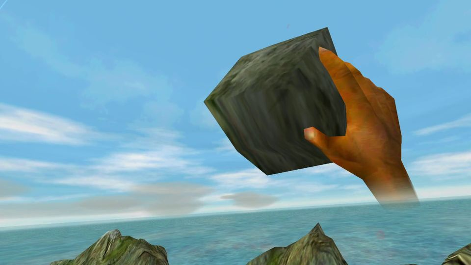
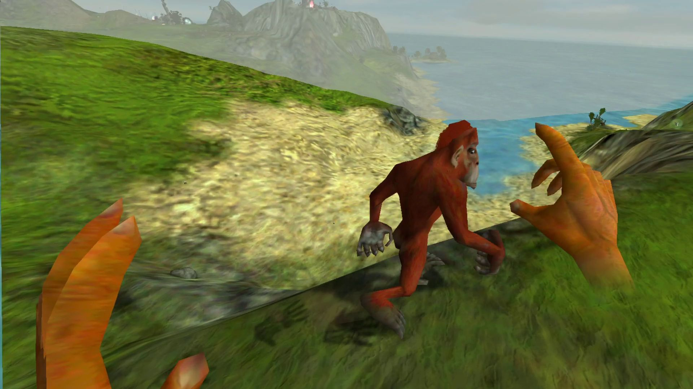
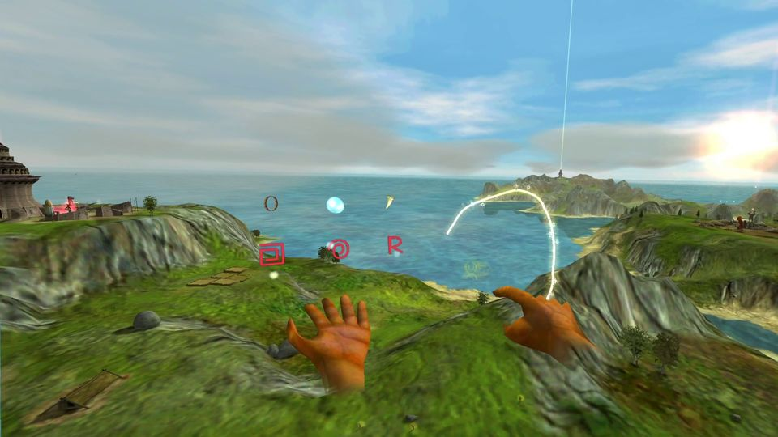
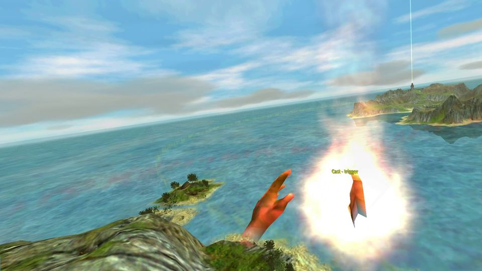
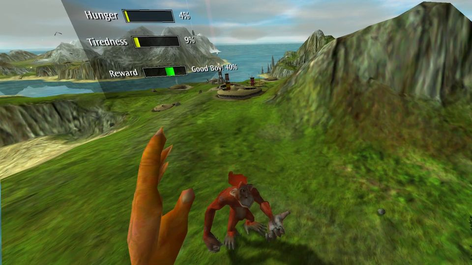
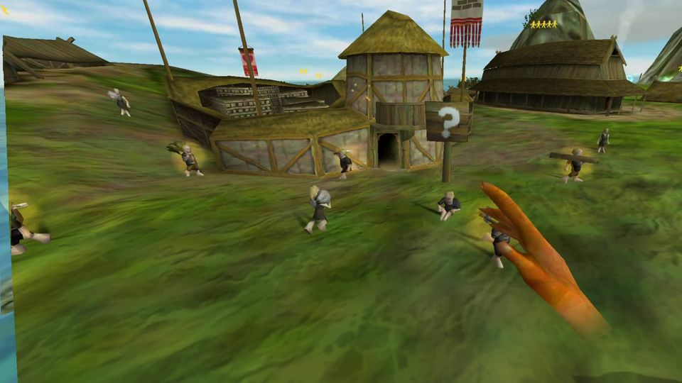
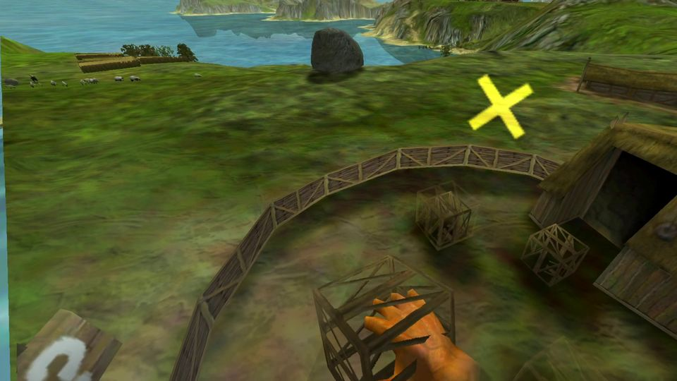

Pick up anything
Villagers, animals, rocks and trees. Throw them at your arm's speed, catch them in the air, and pass them from one hand to the other.

Play Lionhead's Black & White (2001) in virtual reality. Your hands are the hand of God: pick up villagers, hurl rocks across the island, draw miracles in the air and raise your creature face to face.
Menus, picking up and throwing, feeding the village, building, miracles and your creature, all in the headset.
Everything the god hand did with a mouse, you now do with your own hands, in a world that's all around you.

Villagers, animals, rocks and trees. Throw them at your arm's speed, catch them in the air, and pass them from one hand to the other.

Trace the gestures with your fingertip, then pour the miracle where you want it. Your gesture book floats over your upturned palm.

Rain, lightning, shields and fire: cast them by hand, aim with your arm and let go.

Stroke it, slap it, feed it from your hand and lead it on the leash, face to face.

Carry villagers over a field, forest or workshop and soft motes show where they'll land and the job they'll take.

Carry a scaffold, turn your wrist to turn the blueprint, and let go to build.
One installer does it all: it patches the game, installs the mod, keeps both up to date and launches you into VR.
Get JakeypooBWVRModInstaller.exe and run it. It keeps itself up to date.
It finds your Black & White folder, applies the v1.20 and Fan Patch 1.42 updates if needed, and installs the mod.
Put on your headset and press Launch in VR. SteamVR starts for you.
The installer isn't code-signed yet, so Windows may say "Windows protected your PC". Click More info, then Run anyway.
Before changing anything, the installer backs up your saves and every game file it touches, with one-click restore. Your existing saves work with the mod, and saves made with the mod still load without it.
The short answers. The Discord is the place for the long ones.
Yes. It's a free fan project. You need your own copy of Black & White (2001) for PC; the mod ships none of the game's files.
PC VR headsets that run SteamVR. The mod is developed and tested on the Valve Index.
Yes. Your existing Black & White saves work with the mod, and saves made with the mod still load without it.
If your game isn't on v1.20 with Fan Patch 1.42 yet, it downloads those patches from bwgame.net (with your OK) and applies them, including on Windows 11 where the old patch installers don't work. Everything it changes is backed up first, and Uninstall removes exactly the mod's files.
It's in alpha and updated often. The installer shows each version's patch notes and known issues, and offers updates as they come out.
Use Report a bug or an idea in the installer, or post in the Discord.
New releases are announced on the Discord. It's also the place for help, feedback and sharing your god moments.